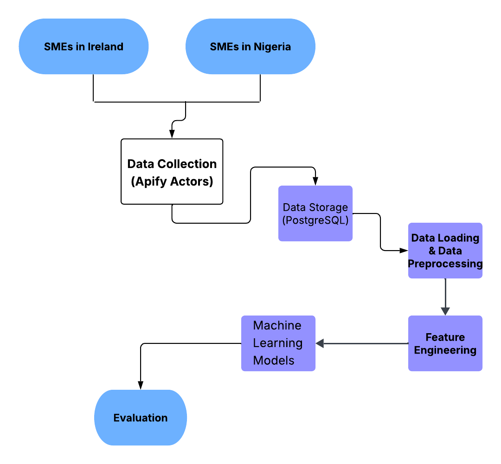
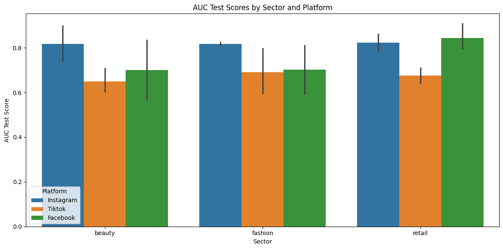
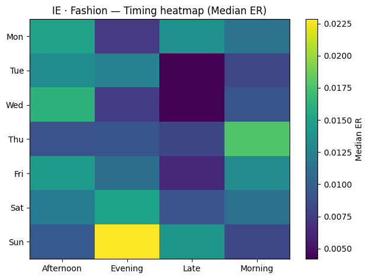
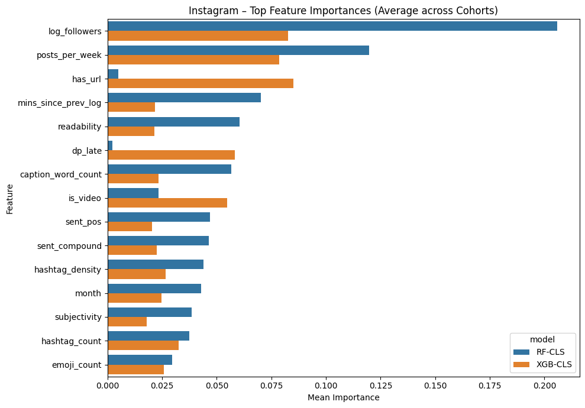

Predictive Social Media Performance for SMEs, Ireland vs Nigeria
I built a multi platform analytics pipeline that collects public posts from SME accounts, stores the data in PostgreSQL, engineers content and timing features, then predicts which posts will land in the high engagement group. The goal was practical, help SMEs understand what works, where it works, and how predictable engagement is across markets.
Quick snapshot
Data
40,217 posts from about 750 SME accounts
Platforms
Instagram, TikTok, Facebook
Models
Random Forest and XGBoost with temporal splits
The problem
SMEs post consistently, but it is not always clear what platform to prioritise, what content signals matter, and whether what works in one market transfers into another. I wanted a framework that gives evidence, not vibes.
What I built
Data acquisition using Apify actors, normalised into a shared PostgreSQL schema
Feature engineering around timing, caption structure, hashtags, and account history
Cohort based labels that define high engagement within each platform, country, sector context
Model training with temporal validation to reduce leakage and simulate future performance
Evaluation with AUC plus top decile lift to translate accuracy into business value
Results and insights
Best cohorts achieved strong ranking performance, with AUC values reported between 0.80 and 0.93 in the thesis abstract
Some cohorts delivered top decile lift above 7, meaning the top ranked ten percent of posts contained over seven times more high engagement posts than random selection
Instagram showed stable predictability across both countries, while TikTok was notably more predictable in Nigeria than Ireland
Content strategy signals were not linear, caption length effects depended on platform and context, and tree models captured that pattern well

Pipeline overview, from scraping to PostgreSQL to modelling.

Model performance summary, AUC and lift across cohorts.

Timing heatmap of one of the sectors(Ireland Fashion).

Top feature importances for Instagram.